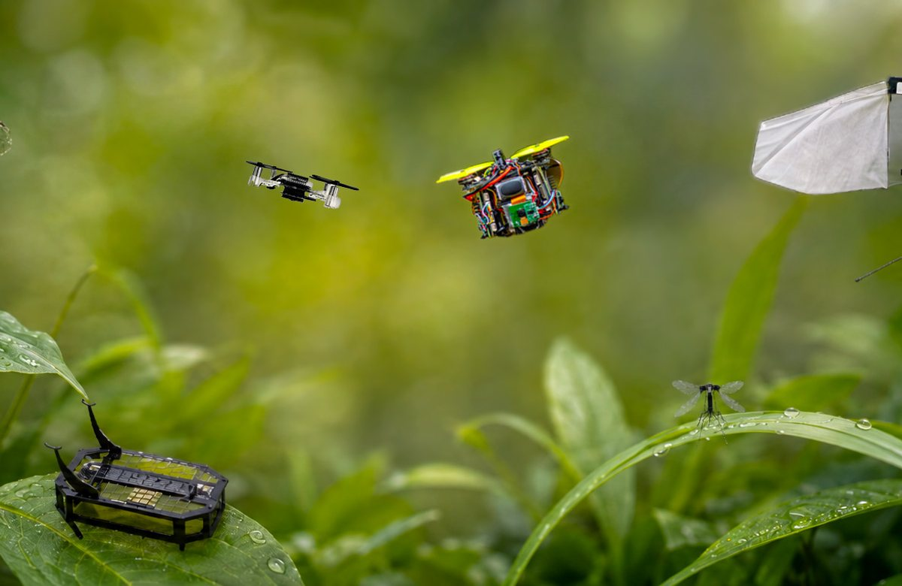

Workshop · IROS 2026, Pittsburgh · 1 October 2026
Co-organizing the Insect-scale Autonomy workshop at IROS 2026
Co-organizing the Insect-scale Autonomy workshop at IROS 2026 in Pittsburgh. The workshop looks at how reliable autonomy can be achieved on severely resource-constrained platforms, where perception, mechanics, computation, and control all have to fit within insect-scale limits.